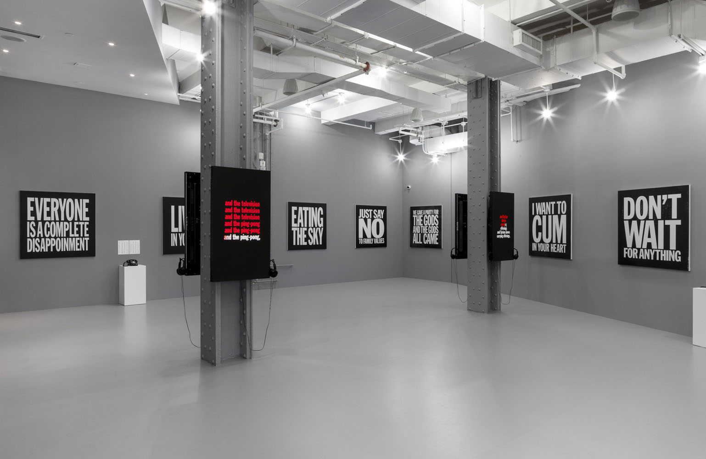

Ugo Rondinone: I ♥︎ John Giorno was a sprawling, multi-part exhibition that presented the extraordinary life and work of the poet, artist, activist and muse, John Giorno. Encompassing thirteen venues across Manhattan, Red Bull Arts participated in this city-wide celebration, presenting Giorno’s audio and visual works, including his visionary Dial-A-Poem, his iconic screen print painting series made in collaboration with his longtime friend and designer Mark Michaelson, sound poems created with audio engineer Bob Bielecki, and more. We produced a newly re-mastered John Giorno Band LP artist edition “I’m Rock Hard" (1982–1987), and a series of I ♥︎ John Giorno merchandise.



All images credit: Installation view of Ugo Rondinone: I ♥ John Giorno at Red Bull Arts New York, 2017.
PROGRAMS
DIAL-A-POEM Radio Marathon
Organized by art historian and guest curator Lauren Rosati, the program featured more than 30 artists, poets, and musicians who read their work, Giorno’s poetry, and the works of his contemporaries to audience members in the gallery and to listeners on the airwaves.
The John Giorno Band Record Release Celebration: Words come from Sound & iOS-A-Poem
This event included a listening party for the “I’m Rock Hard” record and a new commission by artist Janani Balasubramanian called “iOS-A-Poem.” Balasubramanian invited the public to participate in an interactive performance and audio installation conceived in response to Giorno’s 1968 “Dial-A-Poem.” “iOS-A-Poem” questioned “how communication and technology have transformed between then and now, and how our relationships to one another have altered as a result.”